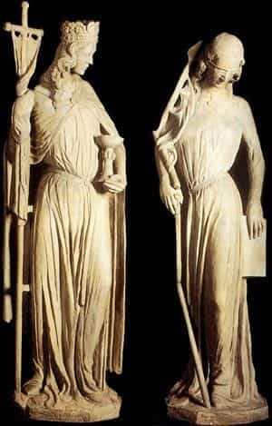
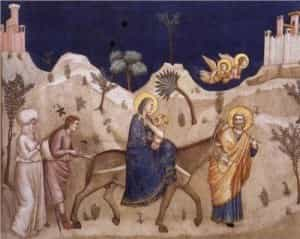
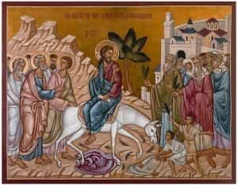
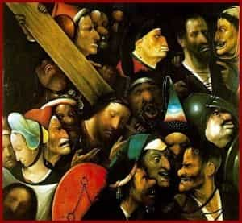
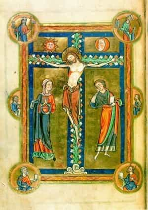
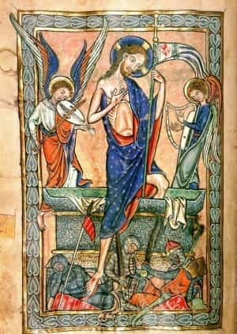

< < < Back
On Impiety And The Passion Of The Lord – Return Of Kings
This week we continue on the theme of impiety, with a bit longer article in honor of the Sacred Triduum.
Last week, we mentioned that impiety is the virtue of showing respect for our roots and those joined closely to us in them. We also saw how modern society is based upon impiety, piety’s opposite—hence, its obsession chiefly with sex and gender, internal class struggles and racism. In attacking sexual matters, it eats away at the very root of society. It attacks whatever survives, by teaching the people to hate themselves, their parents and their ancestors, most effectively along lines of class and race tensions. The net effect is to impede people from putting down roots, or retaining any connection to the roots they had.
In the Passion of Christ, on the day whereof this article will likely post, we find that impiety and piety were in special conflict. The Lord knew that His Passion, the center of history and the greatest act of Piety, would necessarily provoke the great impiety, an exacerbation of the Mystery of Iniquity long working in the world. St. Augustine has well summarized this by contrasting two cities—the City of God, and the City of Man.

The first parents of the human race, in degrading themselves, degraded the origin of all men, and ruptured the friendship they had with God their maker. The Lord, however, in pronouncing the curse upon them, was actually providing the means of remedy that would one day come: the decree of suffering, which God would take upon Himself. The first and long part of this process, was to consecrate a single people (i.e., separate them from the rest of the world), and prepare them gradually to produce the Messiah. The Old Testament is full of foreshadowings of this mission, which, sadly, are beyond the scope of this article.
When the fullness of time arrived, the Lord began by purifying again the human race in its origins, laying the groundwork for a revived and truer piety. A woman was conceived by barren parents, her nature prevented by grace from contracting the ancient contagion; the Lord would take the entirety of His nature from her purity, having no human father. One must understand, here: we have the Lord God Himself, the All-Father, the one most due our piety, Incarnate. And, for the Hebrew people, we have here the final result, the summit, of the entire Hebrew race. Here, is the Son of Abraham, Issac and Jacob; the Son of Jesse, David and Solomon; a “Hebrew of Hebrews,” to use St. Paul’s phrase and, moreover, the Son of God Incarnate by a seedless conception, a New Adam drawing the whole of His human nature from the New Eve which He had prepared.
Yet “He came unto His own, and His own received Him not.” The very first event in Jesus’ life, draws our attention to a Jewish people dominated by foreigners—Caesar Augustus has commanded a census, and the Holy Family, with great inconvenience, makes its way to Bethlehem. His own people have no idea, of Who is in their midst, but foreigners—Persian Magi—know Whom they seek, the King of the Jews. Yet when they come to those lands they find a supposed king of the Jews, who is unaware of what is occurring. His reaction, upon hearing, is not to honor God and rejoice in the visitation of his people; rather, he rages with impiety. He unleashes an army upon the people he claims as his own, killing all young boys. The Holy Family is forced to abandon their own nation and people for Egypt – insult to injury, that the promised Messiah should have to retreat to the land from which He delivered Israel, so long ago.

At the Presentation of our Lord in the temple, His own mother begins to enter into the sympathy, the compassion, which she will experience for her Son until the bitter end. The elder Simeon prophesies to her: “Behold, this child is set for the fall, and for the resurrection of many in Israel, and for a sign of contradiction; and thine own soul, a sword shall pierce.”
The Fathers comment on this verse, telling us that the Virgin experienced an interior revelation of the fact that her Son, Whom she knew would suffer, would actually be brought to His suffering precisely by His own people; that His suffering would be rejected by them and held in contempt. She experienced this sorrow, not as we fallen men do in our passions, but with the acute and clean grief of a pure soul apprehending this great Mystery as fully as any mortal may.
Throughout the whole of His ministry, it was this way. When He announces Himself publicly to the people of His hometown, Nazareth, He mentioned that none of the Jews’ prophets were accepted by them, but had to be sent to widows and lepers in far-off lands. “And all they in the synagogue hearing this, were filed with anger. And they brought Him to the top of the hill on which their city was built, that they might throw Him off it headlong.” The scene is hardly unique in His life.
Things come to a head, when He raises Lazarus from the dead a week before coming to Jerusalem. From that point on, the leaders of the Jews are very intent on putting Him to death; the news of that particular miracle was hard to conceal, and the Jewish leaders resented and feared the people. The one time His people greet Him with something like recognition, the irony is bitter. He is greeted as king, as the Son of David! The Hebrew children run before His foal, throwing their clothes, and fronds of palms, and flowers, before His feet. Yet this same crowd shall, in five days’ time, clamor for His execution.

And how does that death come about? One of His own chosen disciples. For what? Because the Lord was not delivering the political revolution and liberation, which the Jews expected of their Messiah. So, for a bit of money, Judas Mercator Pessimus sold his Friend, Brother, Countryman, Messiah, King and God. One moment he shares bread with the Man, and the next, he arranges His betrayal.
For if my enemy had reviled me, I would verily have borne with it. And if he that hated me had spoken great things against me, I would perhaps have hidden myself from him. But thou a man of one mind, my guide, and my familiar, Who didst take sweetmeats together with me: in the house of God we walked with consent.
And in our Lord’s betrayal, what do we find? His own Apostles are positively bored with the situation. They’re tired. They can’t be bothered. Their Friend and God is sweating blood in the garden; the perfect humanity of Christ is preparing itself to endure a Passion which, precisely because of the perfection of that nature, shall be felt more keenly, and shall be more heinous and atrociously evil, than any suffering could otherwise be. And when the moment of capture comes, they all scatter and flee—the first collegial act of the pope in union with the bishops of the world! His chief apostle denies not once, but thrice, that he even knows the Man.
The crowning moment of impiety comes. His countrymen, not wishing to be blamed, connive to have him killed by the foreign invaders. Normally a country under occupation experiences an increased sense of solidarity; selling a countrymen out to the occupiers would be the most despicable thing one could do. Yet, wonder of wonders, even the foreigners are not so impious and bloodthirsty against this Judaean Peasant, no friend or brother of theirs! Even the unprincipled Pilate was embarrassed to kill Him. But the leaders of the Jews are busy winding up the crowd; come hell or high water, He’ll die.

On the hill of Golgotha, we find our Lord still being mocked by His persecutors. His blessed mother and a few women are all that attend Him, along with St. John, the only Apostle who, after fleeing, returned to see things through. His mother, the Gospels tell us, had “treasured up all that was said, pondering them in her heart,” from His earliest childhood, when the shepherds and Magi had come, and when Simeon had prophesied, and when they had lost Him as He taught in the temple as a boy. This was it, the last remnant of faithful Israel: the Mother of God, some ladies, a young man. A single one of Israel’s teachers, St. Joseph of Arimathea, remained, offering to His Messiah his own tomb.
The events of HIs life are familiar to many of us—so familiar, that we easily read them without much surprise or reflection. Sometimes it helps to use an analogy; in our day, many men watch the joy of their domestic life wane, as the country turns immoral, wives turn bitter, children turn disobedient and ungrateful. Yet the men keep working and tending for them, out of love, and duty. This is a point from which to begin sympathizing with the Lord, for this is similar to what He endured, albeit on a vastly greater scale.
What Mystery of Iniquity is this, that the God and Savior of Mankind, should come to endure such universal and pervasive ingratitude, treachery and betrayal, especially from His own people and intimate friends, as a constant feature of His life? “And he shall turn the heart of fathers to their sons, and of sons to their fathers, lest I come and strike the earth with a curse.”

Rejected by all but a last remnant of His own, the Lord would invite others to join Him, instead. He told of a parable, in which a great man had prepared a wedding feast, but all of his kin and friends made excuses and absented themselves from it. The man therefore invited anyone that would come in from the streets and alleys, lest the rich banquet he prepared should be wasted and lacking in good cheer.
Those who come to this Marriage Supper, prepared on the gibbet of the Cross, become the new people of the Lord. Piety is sown anew in this race, grafted into the True Israel, Christ, through Baptism. Those who consent to be joined to Him are inducted into citizenship in the City of God, the City that perdures in piety. The rest, rank amongst the citizens of the City of Man, where only God’s grace can liberate a man from the constant struggle against impiety. And the cruelest princes of this City are those who, having once belonged to Israel, whether of the Synagogue or of the Church, have become guilty of betraying the Body and Blood of the Lord.
The Scriptures teach that all citizens of the City of God have a part in “making up whatever is lacking” in the sufferings of Christ, of following Him in His struggle with the impiety of lost man; following this, the Fathers and Doctors have often remarked that the Church, through time, often goes through periods that bear a resemblance to His Passion, where she imitates her Lord in His suffering and betrayal.
Of no age would this be more true, than of the last and final contest between the Church and the Anti-Church, the City of God and the City of Man. When our course on Philosophy ends, I’ll begin to address how the modern age is the age of that conflict, and how the mystery of impiety which we see all around us—the apostasy, the class warfare, the ethnic strife and betrayals, the whole of it—is the most complete recapitulation of the Lord’s Passion in the Church, helping us to understand the failures and crises we perceive all around us.
On this day, however, contemplate the Blessed Virgin, who pondered and remained faithful to her Son in suffering, from her first glimpse of this at the prophecy of Simeon, through to the bitter death, the deposition from the Cross, the laying of His most pure Body in the tomb. What did she think, when that stone hid Him from sight? No, she did not despair; she waited to see what the Lord would do.
But that was not the end of His story; nor is this present evil the end of the Church’s story. There is yet a day to spend with the Lord in Hell. And then…

When it comes, I wish a glorious Day of Resurrection to you all.
Read More: Why Is Modern Christianity So Wimpy?